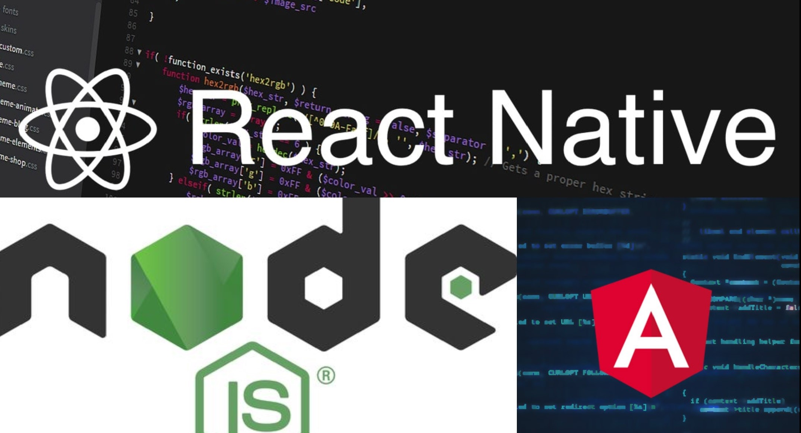

¿Diferencias entre Node Js, Angular y React?
¿Cómo empezaron?
Node Js: Fue creada por Jordan Walke, un ingeniero de software en Facebook, inspirado por los problemas que tenía la compañía con el mantenimiento del código de los anuncios dentro de su plataforma. Enfocado en la experiencia del usuario y la eficiencia para sus programadores, influenciado por XHP (un marco de componentes de HTML para PHP), nace el prototipo ReactJS.
Angular: Fue Lanzado en 2010 por Google. Es un framework javascript basado en texto mecanografiado. Eso fue lanzado antes de los otros dos frameworks Javascript que estamos discutiendo en este blog. Hoy se llama Angular pero antes de 2016 había un sufijo ‘JS’ a su nombre. JS fue eliminado de su nombre después del lanzamiento de Angular 2+. El 28 de mayo de 2019, se lanzó su última versión, Angular 8.0.0. Google y Wix se encuentran entre las empresas más populares que utilizan Angular.
React: Lanzado en 2013 por Facebook. Se utiliza principalmente en sitios web de alto tráfico. Fue desarrollado cuando los anuncios de Facebook comenzaron a ganar tráfico y enfrentaron problemas en su codificación y mantenimiento que representaban ciertos problemas. Su última versión, 16.8.6, se lanzó el 6 de mayo de 2019. Whatsapp, Instagram Paypal, Glassdoor, BBC son algunas de las compañías populares que usan React. Es altamente dinámico y ofrece un gran soporte en la creación de interfaces de usuario interactivas.
¿Cuál es la mejor plataforma?
Node Js: Es un código abierto de JavaScript para la creación de aplicaciones de red. Permite a los desarrolladores (programadores) ejecutar el código en el lado del servidor y generar aplicaciones web de forma altamente optimizada.
Angular:Este Framework de Javascript utiliza DOM real. Es extremadamente difícil de manejar porque si pierdes el flujo, tendrás que profundizar en los códigos para descubrir el problema. Es lento y atrae muchos errores. El uso real de DOM por parte de Angular afecta su rendimiento y capacidad de hacer un software dinámico.
React:Esta biblioteca Javascript está usando DOM virtual. No es específico del navegador y ligero. Es gratuito y elimina los problemas de rendimiento lento del DOM real. Esto permitió una mejora significativa en el rendimiento de los frameworks / libreríasde JavaScript e hizo que React fuera completamente popular.
¿Quienes los usan?
Node Js: Es perfecto para desarrollar aplicaciones que trabajan en tiempo real. Algunos ejemplos prácticos desarrollados con Node.js: aplicaciones de redes sociales, sistemas chat, aplicaciones de procesamiento de imágenes, apps de gestión personal, portales web, sistemas back-end y apps de almacenamiento y manipulación de grandes datos.
Angular: Es dogmático, dando a los desarrolladores muchas decisiones tomadas por defecto como la conectividad de red, administración de estados, elección del idioma, las herramientas para compilar aplicaciones... Estos valores predeterminados se prueban y se validan continuamente entre sí para garantizar que la plataforma Angular avanza a un ritmo constante y fiable. Estas opciones por defecto se han diseñado teniendo en cuenta la libertad y la flexibilidad. Las empresas y las organizaciones tienen un montón de necesidades diferentes... Angular permite cambiar estos valores predeterminados cuando sea conveniente. Un buen ejemplo de esto es nuestra biblioteca de Material Design. Material Design fue construido para sacar el máximo provecho de lo último y lo mejor de Angular, pero Angular permite a las empresas elegir y utilizar cualquier biblioteca de interfaz de usuario que satisfaga sus necesidades.
React: Desarrolla interfaces de usuario. Fue desarrollada por Facebook, quienes también la mantienen actualmente junto a una comunidad de desarrolladores independientes y compañías. Hoy en día muchas empresas de primer nivel utilizan React para el desarrollo de sus aplicaciones, y es que entre ellas podemos encontrar Facebook, Instagram y el cliente web de WhastApp (todas propiedad de Facebook), y otras como AirBnb, Uber, Netflix, Twitter, Reddit o Paypal. Desde su lanzamiento, su uso ha ido incrementando notablemente, convirtiéndose, a día de hoy, en una de las tecnologías front-end más utilizadas.